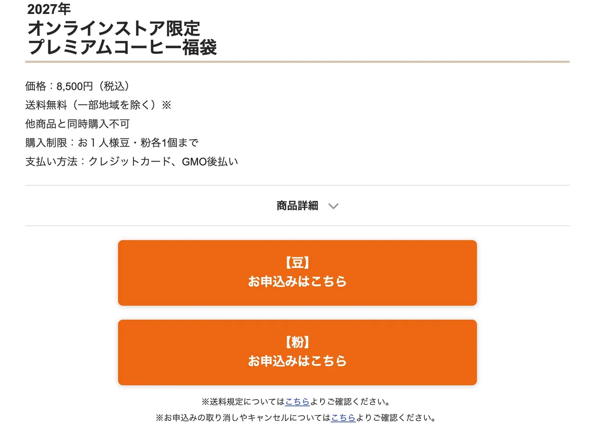
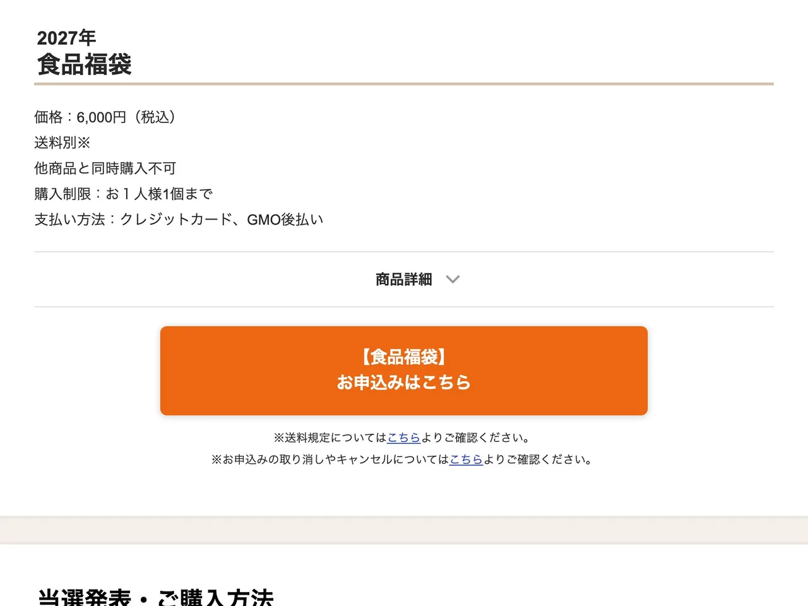

カルディ福袋2027は、公式オンラインストアの抽選が2026年11月30日23:59まで、店舗で受け取る食品福袋のアプリ抽選が12月8日23:59までです。11月22日時点の公式案内では、オンラインの対象はプレミアムコーヒー福袋と食品福袋です。受け取り方によって申込先と当選確認の日程が変わります。
01オンライン抽選の対象と中身
| 対象 | 価格 | 申込・購入の条件 |
|---|---|---|
| オンラインストア限定プレミアムコーヒー福袋 | 8,500円（税込） | 豆・粉各1個まで。送料無料（一部地域を除く） |
| 食品福袋 | 6,000円（税込） | 1人1個まで。送料別 |
プレミアムコーヒー福袋にはコーヒー豆3種とドリップコーヒー6種が入ります。 ニューイヤーブレンド2027、パナマ ゲイシャ、コスタリカ サンタ・テレサ 2000は各200g。申込ボタンは豆と粉に分かれています。バッグはボア素材のトートです。

食品福袋は、もへじの干支商品や福袋限定品、カルディの人気商品など21点前後をまとめたセットです。付属のトートバッグには開け口にファスナーが付いています。

02オンライン抽選は11月30日23:59まで
- 公式オンラインストアに会員登録し、ログインします。登録済みの場合はそのアカウントを使います。
- 2026年11月18日1000から11月30日23:59までに、希望商品の申込ボタンから抽選に申し込みます。
- 登録アドレスに「抽選申込み完了のお知らせ」が届いたか確認します。受信制限を設定している場合は kaldi.co.jp を受信できるようにします。
1次当選発表はプレミアムコーヒー福袋が12月1日、食品福袋が12月2日です。1次当選者の購入期限はどちらも12月10日23:59です。 当選メールのURLから進み、申込時と同じアカウントで手続きします。落選の場合はメールが届きません。発表後は抽選ページでも結果を確認できます。
注意申込みの取消しと当選後のキャンセルはできません。購入期限を過ぎると当選は無効になります。
支払いはクレジットカードかGMO後払いです。ほかの商品との同時購入はできません。注文時の配送日指定と店舗での受け取りはできません。
03店頭受取のアプリ抽選は12月8日23:59まで
店頭受取を希望する場合は、公式アプリで受取希望店舗を選びます。 アプリに会員登録してログインし、ホーム画面で対象商品の抽選申込ボタンを開きます。申込期間は2026年11月18日0:00から12月8日23:59までです。店頭受取分の食品福袋は6,000円（税込）で、申込みは1人1個までです。結果は12月18日以降、アプリで確認できます。
店舗で受け取る際はアプリの当選画面をレジで提示し、店頭のQRコードを読み取って会計します。当選店舗でのみ受け取れます。受取期間は原則2027年の初売りから1月5日までです。店舗ごとに異なる場合があるので、アプリの当選画面で確認してください。期間を過ぎるとキャンセル扱いです。
04よくある質問
カルディの食品福袋はオンラインとアプリの両方で申し込めますか？
それぞれで会員登録すれば、両方から申し込めます。オンライン抽選は11月30日23:59までです。アプリ抽選は12月8日23:59までで、当選店舗での受取は原則2027年の初売りから1月5日までです。
オンラインの1次抽選に外れたらもう一度申し込めますか？
申込みは1回限りです。2次以降は販売予定数に満たない場合のみ行われ、1次で当選しなかった方が対象です。
アプリの当選画面を保存しておけば店頭で受け取れますか？
受取時にはアプリから店頭のQRコードを読み取る必要があります。当選画面のスクリーンショットでは受け取れません。
05まとめ
結論配送で受け取るオンライン抽選は11月30日23:59まで、店頭受取のアプリ抽選は12月8日23:59までです。
1次当選の購入期限はオンラインが12月10日23:59です。店頭受取はアプリの当選画面で店舗と受取期間を確認してください。ほかの食品系の企画はゴディバ福袋2027の案内も参照できます。